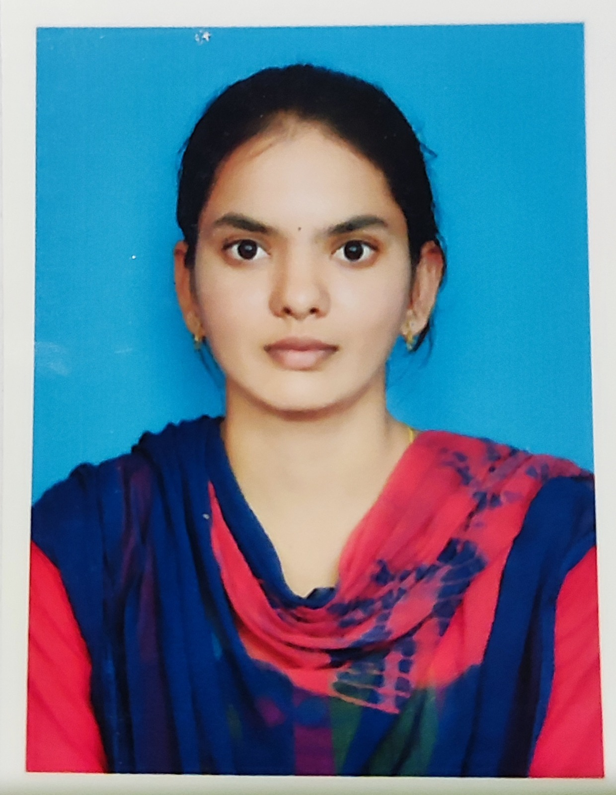

One of my preferred songs is Oke oka Jeevitham from the movie Mr. Nookayya .I often listen to this song when I experience loneliness or feel down. The lyrics, penned by Ramajogayya Sastry, convey profound meanings about life's purpose, guiding us on facing societal challenges. Sung by Haricharan and composed by Yuva Shankar Raja, this song holds a special place for me.
My favourite movie is Hanu-Man it's a 2024 Indian Telugu-language superhero film written and directed by Prasanth Varma and produced by Primeshow Entertainment.It stars Teja Sajja in the title role, alongside Amritha Aiyer, Varalaxmi Sarathkumar, Samuthirakani, Vinay Rai and Vennela Kishore.Hanu-Man is blend of sci-fi, fantasy and mythology.The film, featuring Teja Sajja as the titular character, revolves around Hanumanthu, a small-time thief, and his journey to save his village and the world after discovering a totem that enhances his abilities
